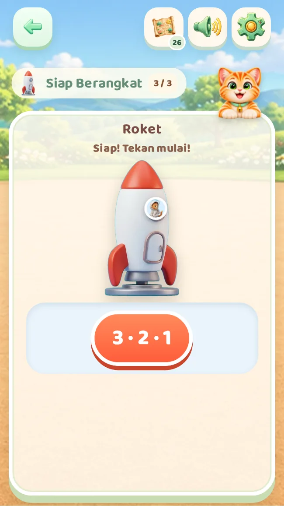
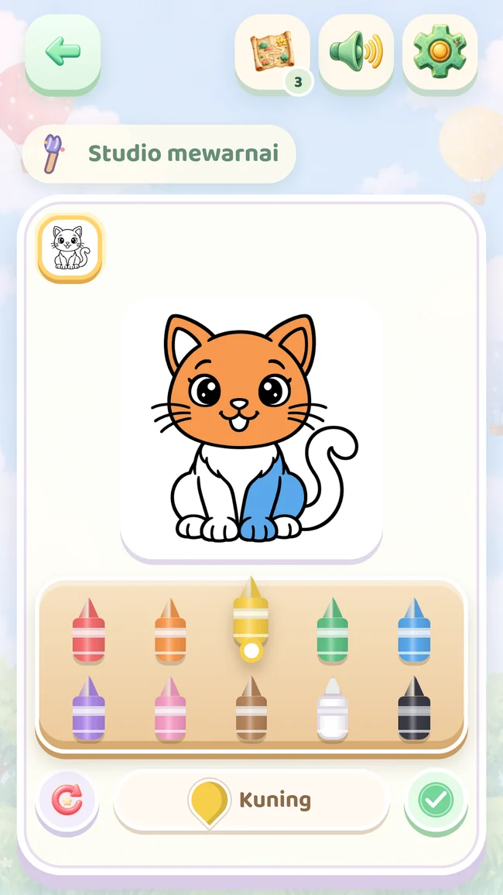
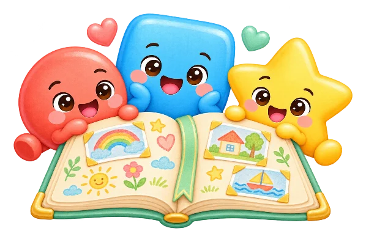
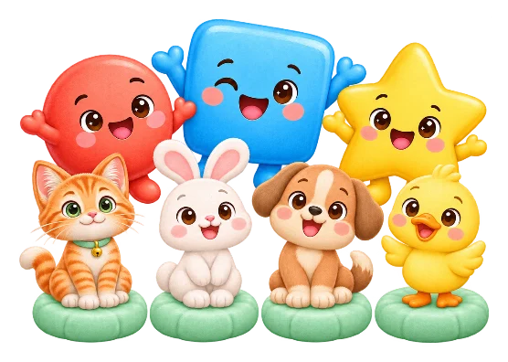
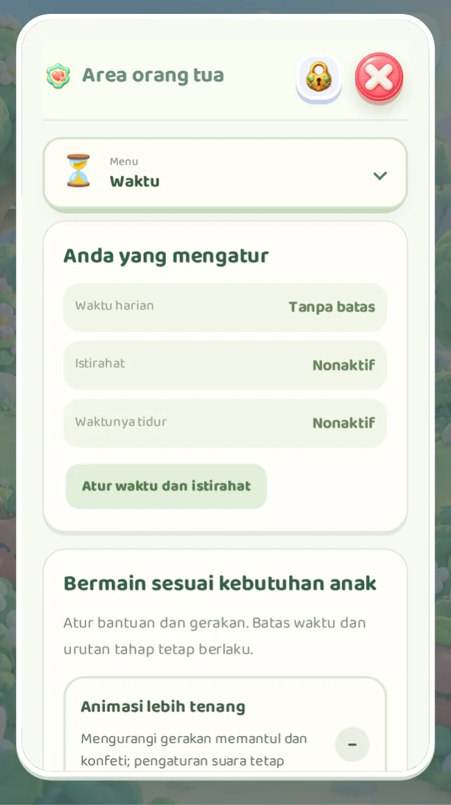

Lebih banyak untuk dilakukan bersama
Tiga ide tanpa layar setiap minggu. Pertanyaan Bermain bersama di semua 18 permainan, sesuai gambar di setiap perhentian.
Versi lengkap
Lebih banyak permainan favorit, adegan mewarnai dan menggambar baru, dan peta untuk setiap saudara. Satu pembelian Google Play memberi akses ke koleksi lengkap.
Sekali bayar. Tanpa langganan.
Area orang tua → Versi lengkap. Harga terkini ditampilkan Google Play.




285 tempat sudah termasuk 50 tempat gratis. Di kedua versi, tempat terbuka secara berurutan.
Yang ditambahkan versi lengkap
Semua yang ada di versi gratis tetap ada. Di atasnya, versi lengkap menambahkan:
Tiga ide tanpa layar setiap minggu. Pertanyaan Bermain bersama di semua 18 permainan, sesuai gambar di setiap perhentian.

Semua penemuan pertama beserta tanggalnya. Semua kegiatan 6 bulan terakhir, bulan demi bulan. Satu halaman untuk tiap anak.

Semua lukisan, gambar, dan catatan yang kalian buat bersama, dalam satu PDF A4 yang bisa dibagikan.

Percobaan pertama dan gambar terbaru dari setiap bentuk, berdampingan; tanpa nilai, hanya kenangan.

Waktu harian, pengingat istirahat, dan jam tidur, diatur terpisah untuk tiap anak.

Di satu perangkat, setiap saudara punya peta, medali, dan gambar sendiri.
Versi gratis dibuat untuk mengenal permainan di 50 perhentian. Versi lengkap memperluas peta yang sama menjadi 285 perhentian dan membuka semua alat untuk orang tua.
| Isi | Gratis | Versi lengkap |
|---|---|---|
| Tahap petualangan | 17 | 70 |
| Halaman mewarnai | 4 | 22 |
| Gambar puzzle | 2 | 12 |
| Putaran Pasangan hewan | 2 | 9 |
| Petunjuk safari | 2 | 9 |
| Putaran balon | 2 | 12 |
| Putaran Rumah hewan | 2 | 8 |
| Perhentian Pikir dan Pilah | 0 | 15 |
| Teman mandi | 2 | 8 |
| Permainan besar (5 permainan) | 4 | 50 |
| Permainan pendek baru (18 permainan) | 13 | 70 |
| Total tahap permainan | 50 | 285 |
| Isi | Gratis | Versi lengkap |
|---|---|---|
| Pertanyaan Bermain bersama | Contoh di 2 permainan | Di semua 18 permainan, masing-masing lima |
| Rencana keluarga mingguan tanpa layar | 1 ide per minggu | 3 ide per minggu |
| Waktu harian, istirahat, dan jam tidur | — | Terpisah untuk tiap anak |
| Buku Kenangan (PDF A4) | 2 karya, 1 catatan | Semua karya dan catatan |
| Gambar pertama dan terbaru | 1 bentuk | Semua bentuk |
| Riwayat bermain | 2 catatan pertama | Semua penemuan pertama dan 6 bulan |
| Profil keluarga | 1 anak | Hingga 4 anak |
| Lima bahasa, suara offline setelah diunduh, tanpa iklan | Termasuk | Termasuk |
Angka sesuai dengan aplikasi versi 1.1.2. Versi lengkap mencakup semua isi gratis; di kedua versi perhentian terbuka berurutan.

Bersama, sesuai ritme keluarga
Pemeriksaan orang dewasa melindungi area orang tua. Atur waktu bermain, lihat yang sudah dicoba, dan temukan ide kegiatan bersama.
Waktu bermain harian, pengingat istirahat, dan jam tidur, terpisah untuk tiap anak.
Aktivitas selesai dan durasi bermain. Bukan tes perkembangan atau kemampuan.
Simpan atau bagikan karya dan siapkan lembar A4 untuk dicetak serta diwarnai.
Gambar yang dikenal, kata baru
Pilih gambar, dengarkan namanya, lalu cari benda yang sama di rumah. Kelima bahasa tersedia di kedua versi.
Suara bahasa Inggris sudah ada di aplikasi; suara bahasa lain diunduh sekali dari Google Play saat dipilih, lalu berfungsi tanpa internet.
Satu kali pembayaran

Di Area orang tua → Versi lengkap tertulis “Anda punya versi lengkap · Pembayaran selesai · Tidak ada tagihan lagi”, dan tombol beli tidak muncul lagi.
Sekali bayar. Tanpa langganan.
Jelajahi 50 tempat gratis untuk mengenal permainan bersama keluarga.
Lihat koleksi lengkap dan harga dari Google Play.
Akses terbuka setelah pembayaran selesai dan pembelian terverifikasi.
Tanpa langganan atau perpanjangan otomatis. Pembayaran tertunda tidak membuka akses. Pembelian dapat dipulihkan; progres tersimpan di perangkat.
Tidak. Versi lengkap adalah pembelian satu kali di Google Play, tanpa langganan dan tanpa perpanjangan otomatis. Di perangkat baru, “Pulihkan pembelian” dengan akun Google yang sama itu gratis. Setelah membeli, bagian Versi lengkap di permainan menampilkan “Anda punya versi lengkap”.
Tempat gratis dapat dimainkan ulang. Gambar dan medali yang diraih tetap tersimpan. Koleksi lengkap dibuka melalui pembelian opsional satu kali di area orang tua.
Buka area orang tua di dalam permainan, lalu Versi lengkap. Google Play menampilkan harga dan meminta konfirmasi pembayaran. Situs ini tidak menerima pembayaran. Tanpa langganan.
Pembelian memberi akses ke koleksi lengkap. Tempat tetap dibuka berurutan setelah diselesaikan; pembelian tidak melewati progres.
Konten aplikasi Android dapat dimainkan tanpa internet. Pembelian dan pemulihan memerlukan internet.
Pulihkan pembelian dari area orang tua dengan akun Google Play yang sama. Progres dan karya tersimpan di perangkat; pemulihan pembelian tidak otomatis memindahkannya.
Tidak. Jejak kaki di peta menunjukkan tahap yang sudah dimainkan dan medali menandai permainan yang selesai. Ringkasan menunjukkan aktivitas selesai dan durasi bermain; bukan penilaian perkembangan atau kemampuan anak.